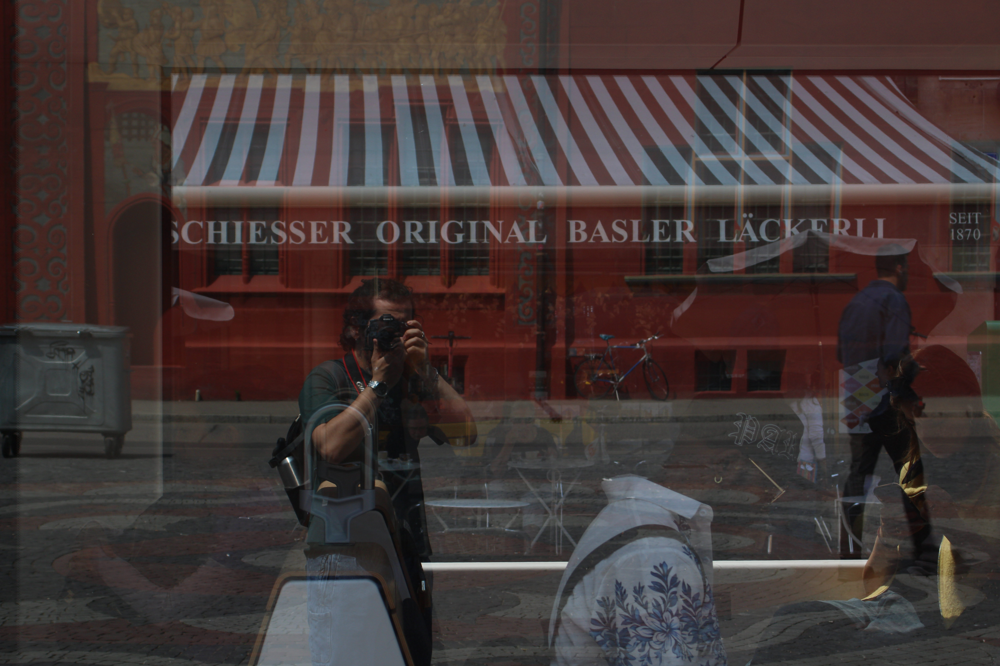
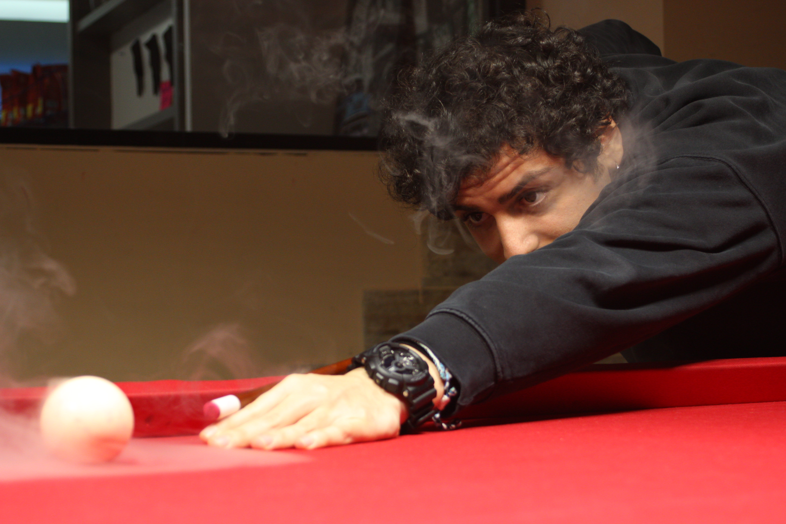
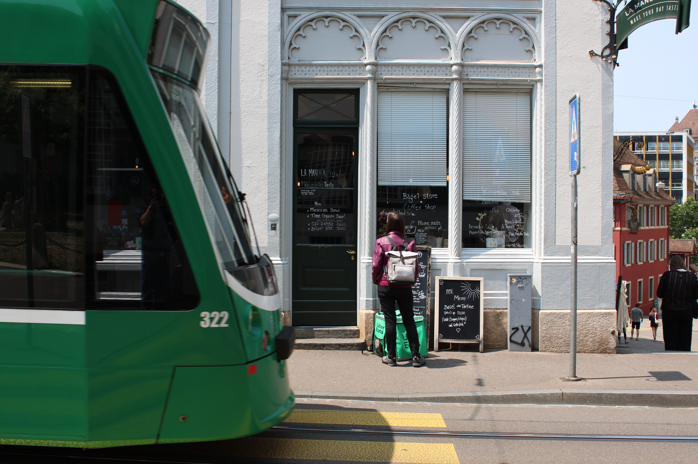
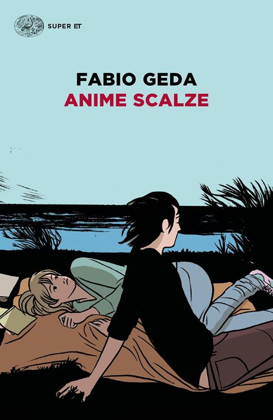
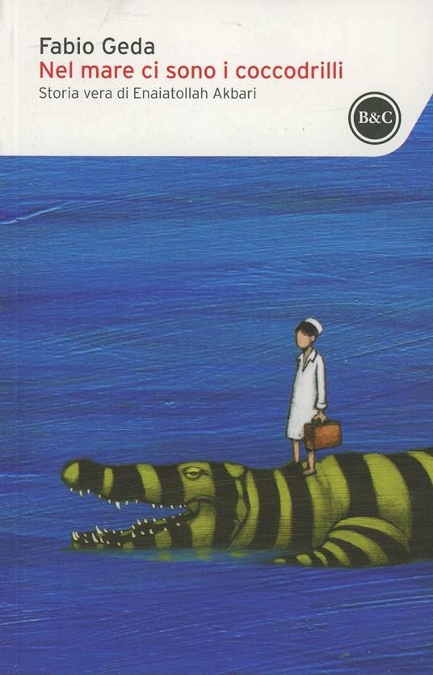
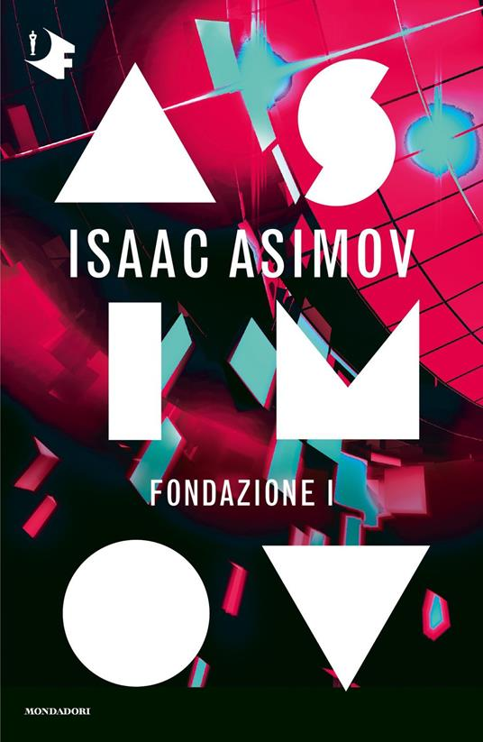
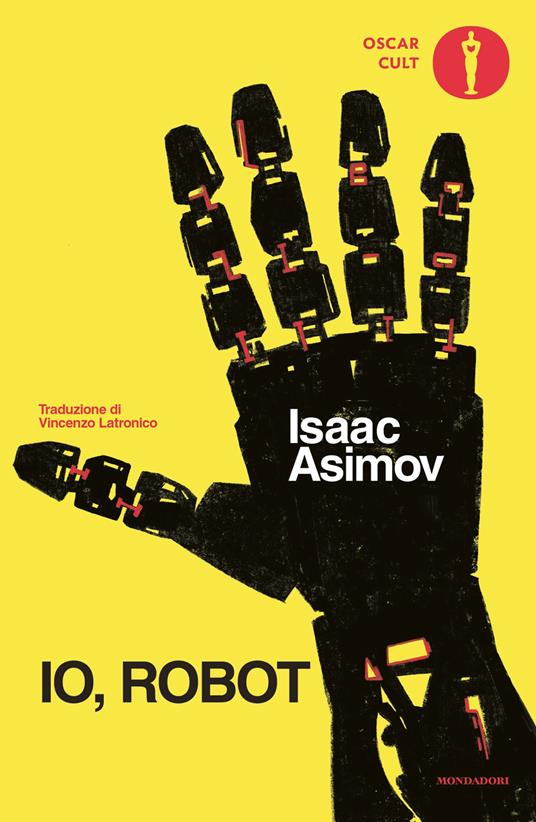

Ciao! Sono Tommaso Pietrosanti, ma online potreste trovarmi come Saintstone — un soprannome che deriva dal mio cognome e da una storia molto speciale risalente agli anni della triennale.
Questo è il mio piccolo angolo sul web. Sentitevi liberi di guardarvi intorno.
Chi sono
Sto studiando Intelligenza Artificiale e Robotica per la Magistrale. Mi affascina l'intersezione tra robotica e intelligenza incarnata attraverso l'IA. La mia speranza per il futuro è un mondo in cui robot ed esseri umani cooperino verso un pianeta più pulito e sostenibile [ Cosa intendo ]. Nel frattempo, studio e lavoro per capire come permettere ai robot di interagire attivamente con l'ambiente, ragionando sul suo stato e sulle proprie azioni al suo interno.
Interessi
Lettura
Leggo sia in italiano che in inglese (il tedesco è un work in progress). In questo momento sto leggendo La scomparsa delle farfalle di Fabio Geda; Dune di Frank Herbert è invece in pausa.
Qualche altro libro che ho letto:




Fotografia
Mi piace fotografare su pellicola, anche se principalmente scatto in digitale. Fotografo soprattutto luoghi e persone. Qualche foto selezionata è nella sezione foto [en].
Giochi di carte
Mi piacciono i giochi di carte e gli strategici. Ho giocato un pochino a Dungeons & Dragons e ho portato avanti una campagna come Game Master nel mondo di Mimnor, creato interamente da zero. Ora sono un grande giocatore di 7 Wonders (forza Alessandria!).
Poesia
Ogni tanto — quando arriva l'ispirazione — scrivo poesie in italiano.